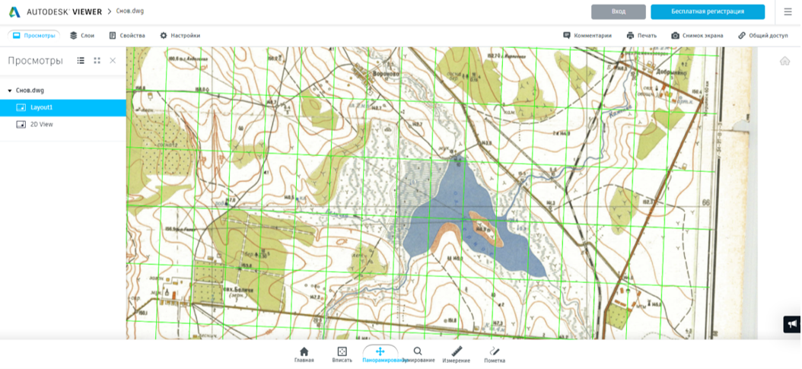
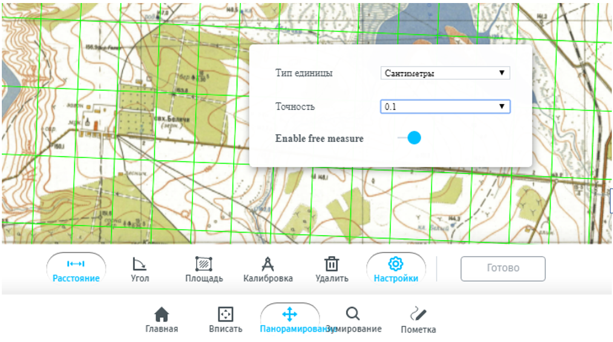
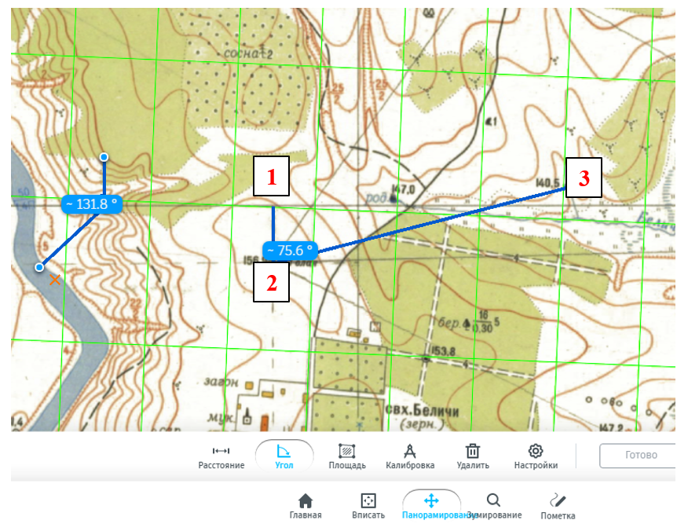

Справка 1 Координаты на топографической карте
1.1 Краткая теоретическая информация
Эллипсоид – математическая фигура,описывающая фигуру Земли и характеризующаяся параметрами малой и большой полуоси.
Географическая (геодезическая) система координат – система координат на эллипсоиде, задающая счёт широтам и долготам в градусах, а также положение эллипсоида внутри тела земли.
Спроецированная (прямоугольная) система координат – система координат проекции, определяющая ориентировку декартовых осей координат и их начало.
1.2 Исходные данные
1.3 Цель работы
Научиться измерять по топографической карте геодезические и прямоугольные координаты точек, решать обратную геодезическую задачу, определять расстояния и ориентирующие углы.
1.4 Выполнение работы в онлайн-вьюере
- Запустить онлайн-вьюер. Откроется учебная топографическая карта.

Менять масштаб просматриваемого изображения можно колесиком мыши. Дополнительно в файле точки, соответствующие 10-секундным отрезкам, соединены зелеными линиями. Т.е. это дополнительно проведенные параллели и меридианы.
- Найти две точки на листе топографической карты, к которым будут привязаны все измерения. Указать их названия в шапке бланка.
## Warning: package 'flextable' was built under R version 4.0.5## Warning: package 'magrittr' was built under R version 4.0.5df <- data.frame(x = 1:10, y = 11:20)
df %>% regulartable() %>% autofit() %>%
width(j=~x,width=1) %>% width(j=~y,width=1)x | y |
1 | 11 |
2 | 12 |
3 | 13 |
4 | 14 |
5 | 15 |
6 | 16 |
7 | 17 |
8 | 18 |
9 | 19 |
10 | 20 |
| Точка | |
|---|---|
1-я (A) |
|
2-я (B) |
- Описать лист топографической карты, заполнив таблицу 1 бланка. Указать масштаб карты (численный вид), номер зоны, долготу осевого меридиана зоны, номенклатуру.
| Номенклатура | |
| Номер зоны | |
| Долгота осевого | |
| Масштаб карты |
- Определить геодезические координаты точек – широту (B) и долготу (L) – с точностью до 1 секунды. Нужно выбрать инструмент Измерение (расположено на нижней панели меню). Откроется дополнительное меню для измерений. Необходимо зайти в Настройки, установить единицы измерений (сантиметры), точность (до 0,1). Обязательно подвиньте рычажок Enable free measure.

Нужно провести перпендикуляр от выбранной точки до ближайших южной и западной зеленых линий, т.е. до ближайшей южной параллели с известной широтой и ближайшего западного меридиана с известной долготой. Когда вы отметите вторую точку отрезка, появится расстояние в см. Нужно перевести расстояние в секунды, если известно, что 10-секундный отрезок по широте составляет 3,1 см, а по долготе - 1,8 см.
Заполнить таблицу 3.
| Номера точек | B (широта) | L (долгота) |
|---|---|---|
| 1 (A) | ||
| 2 (B) |
- Определить прямоугольные координаты точек – абсциссу и ординату – с точностью до 5 м. Измерения проводить аналогично пункту 4, но перпендикуляры проводить к линиям километровой сетки. Вычислить разность соответствующих координат точек. Заполнить таблицу 2. Номера точек Прямоугольные координаты, м
| Номера точек | X | Y |
|---|---|---|
| 1 (A) | ||
| 2 (B) | ||
| \(\Delta\) = |
- Измерение расстояния и дирекционного угла: Проведите измерение расстояния от 1-й до 2-й точки S в см, переведите в метры на местности, значение внесите в таблицу 4.
| Измеренный | Вычисленные | |
|---|---|---|
| Дирекционный угол (\(\alpha\)) направления: 1-2 (A,B) | ||
| Расстояние (S) между точками: 1-2 (A-B), м |
Выберите инструмент измерения углов. Чтобы измерить дирекционный угол, нужно отметить 3 точки: первая точка (1) это проекция вашей точки A на ось Y (выберите горизонтальную линию сетки севернее вашей точки, поскольку дирекционый угол считается от северного направления линии сетки (оси Х) до выбранного направления), вторая (2) - ваша точка А, третья (3) - ваша точка В.

Обратите внимание, что измерения углов в программе ведутся по часовой (от 0° до 180°) и против часовой (от 0° до 180°). Если измеряемый Вами угол больше 180°, необходимо полученное значение вычесть из 360°. На рисунке при измеренном значении 131,8° дирекционный угол будет равен 228,2°. Измеренное (или рассчитанное) значение дирекционного угла \(\alpha\) выбранного направления нужно внести в строки таблиц 4 (измеренные) и 5. Внимание! Измеренное значение вносится в бланк дважды и должно быть одинаковым!
Вычислить дирекционный угол А выбранного направления и расстояние S, решив обратную геодезическую задачу. Полученные значения округлить до до 0,5° и 1 м соответственно, данные занести в таблицу 4. Сравнить измеренные и вычисленные значения дирекционного угла и расстояния. Разность значений не должна превышать 1° для углов и 10 м для расстояний.
Определить, пользуясь формулами и информацией из зарамочного оформления карты, другие ориентирующие углы выбранного направления (точка 1 – точка 2), последовательно заполняя таблицу 5.
| Ориентируемая линия 1-2 (A-B) | Угол |
|---|---|
| Дирекционный угол \(\alpha\) | |
| Сближение меридианов \(\gamma\) | |
| Геодезический азимут A | |
| Магнитное склонение D | |
| Магнитный азимут Aм |
● Определить среднее значение Гауссова сближения меридианов \(\gamma\) на листе карты.
● Вычислить геодезический азимут А выбранного направления.
● Вычислить величину склонения магнитной стрелки D на текущую дату.
● Вычислить магнитный азимут Am выбранного направления.
| Карпачевский А.М., Каргашин П.Е., Прасолова А.И. Топография с основами геодезии. М.: Географический факультет МГУ, 2022. |